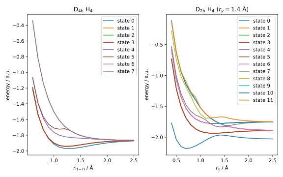

Problem Set 4
Problem 1
The potential energy surface (PES) of H4 is very interesting and feature-rich, despite the simplicity of the molecule. In this problem, you will calculate some slices of the PES of H4 at the full configuration interaction (FCI) level of theory combined with the STO-3G basis set.
Do NOT use minimal basis sets in real-life calculations when highly correlated methods are used! The minimal basis set is used here to keep the computational cost low.
Consider the H4 molecule with D4h symmetry. The molecule has a square planar geometry with a single degree of freedom, which can be chosen as the distance between two adjacent hydrogen atoms .
(a) Perform FCI calculations for the H4 molecule with symmetry at for the first 8 electrically neutral states. Plot the resulting slices of the PES and identify at least one bounded and one dissociative state.
Expected results: The left panel of the graph below.

Now consider the H4 molecule with D2h symmetry. This system has two degrees of freedom, which can be chosen as the side lengths of the rectangle formed by the hydrogen atoms and .
(b) Perform FCI calculations for the H4 molecule with symmetry at and a fixed for the first 12 electrically neutral states.
Expected results: The right panel of the graph above.
The H4 molecule can be used as a (crude) model for photochemical [2+2] processes, as discussed in W. Gerhartz, R. D. Poshusta, J. Michl, J. Am. Chem. Soc., 1976, 98, 6427–6443.
Problem 2
In the lecture, we used the canonical HF orbitals as an orthonormal basis for the FCI calculations. It was mentioned that any orthonormal basis would suffice, and we shall investigate this claim in this problem.
A popular way to orthonormalise a set of basis functions in quantum chemistry is the Löwdin orthogonalisation, also known as the symmetric orthogonalisation. This method is used in our HF implementation to reduce the generalised eigenvalue problem to a standard one.
Given the overlap matrix , the Löwdin orthogonalisation at first computes and then applies the transformation to the basis functions, i.e. where are the orthonormalised basis functions and are the original basis functions.
(a) Show that the basis is orthonormal.
Hint: Calculate the scalar product between two arbitrary transformed basis functions.
Consider the H4 molecule used in the lecture:
r = 1.0 / 2.0
h1 = Atom('H', [ r, r, 0.0], unit='A')
h2 = Atom('H', [-r, r, 0.0], unit='A')
h3 = Atom('H', [-r, -r, 0.0], unit='A')
h4 = Atom('H', [ r, -r, 0.0], unit='A')
(b) Perform FCI calculations for this molecule using the STO-3G basis set and the Löwdin orthogonalised basis functions instead of the HF orbitals for the first 6 electrically neutral states. Compare the eigenvalues and eigenvectors with the results obtained using the HF orbitals from the lecture.
An alternative approach to orthonormalise a basis can be achieved with the help of Cholesky decomposition. The Cholesky decomposition of a Hermitian positive-definite matrix can be written as where is a uniquely determined lower triangular matrix with positive diagonal elements. The Cholesky decomposition of the overlap matrix can be used to orthonormalise the basis functions.
(c) Work out how to calculate the transform matrix using the Cholesky decomposition in a similar way to part (a). Perform FCI calculations for the H4 molecule listed above using the STO-3G basis set and the Cholesky orthogonalised basis functions for the first 6 electrically neutral states.
Hint: The function np.linalg.cholesky could be helpful.
Problem 3
It should be known by now that the FCI method is not feasible for large systems due to its computational cost. Therefore, we have used projectors to reduce the size of the CI space by restricting the total number of excitations. In this problem, we shall explore more possibilities of using projectors.
If not mentioned otherwise, all the CI calculations in this problem should be performed using the STO-3G basis set and the HF orbitals as the basis functions.
One popular way of reducing the size of the CI space is to use truncated CI expansions. We have already used this approach in the lecture to implement the CIS method for excited states. It is also possible to use projectors to obtain arbitrarily truncated CI expansions.
(a) Extend the ConfigurationInteraction class from the lecture to
include the method
def get_n_excitation_subspace(self, ns):
...
return projector
which returns the CI subspace spanned by determinants with the number of
(electrically neutral) excitations specified by the list ns. The list
ns should contain all the desired numbers of excitations, e.g. [0, 1, 2]
for CISD, [0, 1, 2, 3] for CISDT, etc.
(b) Calculate the ground state energy of the H4 molecule listed in Problem 2 using the FCI, CISD, CID, and CIS methods. Compare the results. What is different about the ground state obtained with the CIS method?
Expected results:
| Method | FCI | CISD | CID | CIS |
|---|---|---|---|---|
| Energy / a.u. | -1.91510655 | -1.91046937 | -1.91046936 | -1.87738068 |
(c) Calculate the excitation energies of the first 5 (electrically neutral) excited states of the H4 listed in Problem 2 using the FCI, CISD, and CISDT methods in eV. Compare the results.
Expected results:
| State | FCI / eV | CISD / eV | CISDT / eV |
|---|---|---|---|
| 1 | 0.3899 | 0.9004 | 0.2637 |
| 2 | 0.3899 | 0.9004 | 0.2637 |
| 3 | 0.3899 | 0.9004 | 0.2637 |
| 4 | 4.1032 | 3.9771 | 3.9771 |
| 5 | 5.6170 | 5.5730 | 5.4908 |
The electronically excited states we have calculated so far are in the region of several eV, which can be conveniently measured using UV-Vis spectroscopy. Sometimes, however, other types of spectroscopy can be more informative. One such example is X-ray absorption spectroscopy (XAS), which can be used to probe the core electrons of the atoms. Although these excitations are in principle not different from the valence excitations, since their energies are much higher (hundreds to thousands of eV), we would need to also calculate thousands, if not millions, of lower-lying states to access the core excitations, which is usually not feasible.
Thankfully, since these core excitations are usually well separated from the valence excitations, the mixing between them can be safely neglected. This allows us to calculate the core excitations using projectors.
(d) Extend the ConfigurationInteraction class from the lecture to
include the method
def get_xas_subspace(self, exc_indices):
...
return projector
which returns the CI subspace spanned by determinants containing exactly
one excitation from the (core) orbital specified by the list exc_indices,
as well as full CI for the valence excitations.
The list exc_indices should contain the indices of the core orbitals,
from which the excitations can be made, e.g. [0, 1, 2, 3] means that one
of the 0th, 1st, 2nd, or 3rd spin-orbitals should always be unoccupied.
Hint: Including the electronic ground state in the projector can ease the calculation of the excitation energies for part (e).
Consider a lithium hydride (LiH) molecule with the following geometry:
li = Atom('Li', [0.000, 0.000, 0.000], unit='A')
h1 = Atom( 'H', [0.000, 0.000, 1.595], unit='A')
(e) Calculate the excitation energies of the first 4 core excitations from the Li K-edge of the LiH molecule listed above in eV.
Hint: The Li 1s orbital is well separated from the valence orbitals and can
thus be found as the 0th and 1st molecular spin-orbitals. The argument
exc_indices should thus be [0, 1].
Expected results:
| State | Energy / eV |
|---|---|
| 1 | 54.6541 |
| 2 | 54.6541 |
| 3 | 54.6541 |
| 4 | 55.6827 |